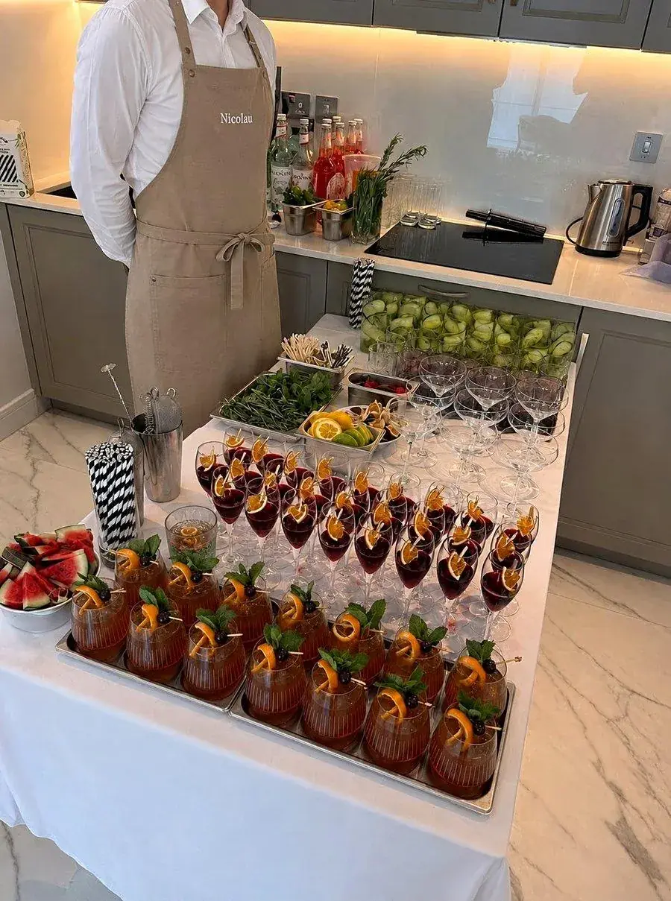

Private Bartender & Cocktail Bar Hire
A full bar, built around your event
A proper bar service for your event — a dedicated bartender, a tailored drinks menu, and a setup built around your space.

A good bar does more for an evening than most hosts expect — the right welcome drink sets the tone before a single course has arrived, and a well-run bar keeps an evening moving without a host ever thinking about it. Hiring a private bartender or a full mobile cocktail bar means exactly that kind of service is handled by a dedicated team, built around your specific party rather than a generic drinks list.
What to expect
01What's included
A booking includes a bespoke cocktail menu designed around your event, a dedicated bartender or team sized to your guest count, and all standard bar equipment and glassware — everything needed to run a proper bar service from welcome drinks through to the end of the night.
02Mobile cocktail bar setups
For larger events, a full mobile cocktail bar can be set up at your venue or private property, giving guests a proper bar experience to gather around rather than a simple drinks table.
03How many bartenders you need
Bartender numbers are scaled to your guest count and the complexity of the drinks menu — a simple welcome-drinks reception for thirty guests needs considerably less support than a full evening of varied cocktails for a hundred, and this is confirmed as part of planning.
04Non-alcoholic & low-ABV options
A well-planned bar now routinely includes a proper non-alcoholic or low-ABV cocktail list alongside the full-strength menu, built with the same care rather than treated as an afterthought — important for events where a meaningful share of guests may not be drinking the full menu.
05Glassware, garnishes & the finer details
The details that make a bar feel properly considered — correct glassware for each drink, fresh garnishes prepared on the day rather than pre-cut, and a bar presentation that suits the rest of the event's styling — are treated as standard, not as an optional upgrade.
06Licensing & responsible service
Where an event requires it, the bar team operates with proper attention to responsible service and any relevant licensing considerations for the venue or private property involved, handled as a standard part of planning rather than an afterthought raised on the day.
07Staffing uniform & presentation
Bar staff are presented smartly and consistently, with uniform style agreed ahead of the event where a specific look or theme is wanted — a detail that's easy to overlook but matters for how polished the whole bar setup feels on the day.
08Hire duration & late finishes
Bar service is booked for whatever duration your event actually needs, including later finishes for an evening that runs long — confirmed as part of the initial booking rather than cut off at an arbitrary time.
09Designing the drinks list
A good drinks list is short, balanced and suited to the evening. Alejandro Nicolau's bar team works with you on a handful of cocktails, a classic or two and alcohol-free options, so every guest has something to enjoy and the bar can serve quickly.
10Setup, service and clear-down
The bar team arrives ahead of the event to set up equipment, ice and garnishes, serves throughout the evening and clears everything away afterwards. The setup is designed to look good in your space while keeping service fast and consistent from the first guest to the last.
11A bar that matches the occasion
A cocktail bar can be a small, elegant setup for a dinner party or a full service for a larger event. Bartenders arrive with the equipment, glassware and ingredients, make drinks to order and look after the bar throughout the evening. A menu of signature cocktails can be designed with you, with classic drinks and options for guests who do not drink alcohol.
12Cocktails and food together
The bar and the kitchen work as one team. Drinks can be matched to the menu, with a welcome cocktail with canapés, a wine suggestion for the main course and something refreshing to finish. Hiring both from the same team simplifies planning, because timing, staffing and service are coordinated in one place.
13Where we cook
Alejandro cooks in private homes and venues across London, including Mayfair, Kensington, Chelsea, Knightsbridge, Belgravia, Notting Hill, Marylebone, Hampstead, St John's Wood, Wimbledon. He also travels for events across the United Kingdom, including Surrey, Windsor, Henley-on-Thames, the Cotswolds, Oxford, Cambridge, Brighton, Bath, Edinburgh, Manchester. You can see every area on the locations page, or send your address and date through the enquiry form to confirm availability.
Private Bartender & Cocktail Bar Hire: FAQs
How many bartenders are needed for a typical party?
It depends on your guest count and drinks menu. Alejandro Nicolau's team scales the number of bartenders to your event and confirms it in your proposal, with larger or more cocktail-heavy events needing more staff.
Can a full mobile cocktail bar be set up at my venue?
Yes. Alejandro Nicolau's team can set up a complete mobile cocktail bar, including equipment and glassware, at your venue for events of most sizes.
Can the drinks menu be built around a specific theme or spirit?
Yes. Alejandro Nicolau builds cocktail menus around your event, whether that means a specific spirit, a seasonal theme or your own favourite drinks.
Is bar hire available alongside a food menu, or only as a standalone service?
Both. Alejandro Nicolau's bar service can be booked alongside a full dining menu as part of the same event, or arranged as a standalone drinks service.
What clients say
- ★★★★★
“Alejandro was professional, the food was incredible, overall it made for an amazing evening! We tried some of the most amazing delicacies executed with such care, the mantao bread (to name one of many) was phenomenal.”
Emmie · 7 guests
- ★★★★★
“Perfect from start to finish. Alejandro provided an amazing menu initially and took my suggestions and requests onboard. He was engaging, supremely competent and made loads of excellent dishes. Everyone loved it.”
Daniel · 5 guests
- ★★★★★
“10/10! Food was amazing, top restaurant standard. Alejandro was very organised and helped our event run smoothly. Would certainly book him again.”
Lucy · 23 guests
- ★★★★★
“Excellent service from start to finish. We did nothing but sit at a beautifully laid table, eat delicious food and wave them goodbye after everything had been cleaned and cleared. They made our evening super special.”
Niki · 8 guests
- ★★★★★
“Alejandro was fantastic and provided delicious, high quality and beautifully presented food to make my sister's bachelorette incredibly special! A direct quote: 'Chef Alejandro was a slay'. Would definitely book him again!”
Becky · 16 guests
- ★★★★★
“The most delicious Spanish food. Alejandro is an incredible chef, and made the hen do so special. I would recommend Alejandro to anyone, he is a superstar!”
Francesca · 13 guests
- ★★★★★
“Alejandro was great with planning ahead of the event, arrived on time, made the most delicious food, and was very clean and tidy. His menus are also amazing, and as good as they sound.”
Bea · 14 guests
- ★★★★★
“We booked Chef Alejandro for my mother's 65th birthday dinner. He helped us create a vegetarian Asian fusion menu, and every dish was delicious with very generous portions. My mum was absolutely delighted.”
Georgina · 6 guests
- ★★★★★
“I booked Alejandro for my 40th birthday and it was perfect. I had gluten free and vegetarian guests which he catered to, with two beautifully cooked options per course. I'd also add his canapés for an extra special touch!”
Kat · 5 guests
- ★★★★★
“Alejandro catered for our intimate wedding, we consider ourselves 'foodies' and the food was a really important part of it and Alejandro absolutely delivered, from the canapés to dessert everything was amazing and I could not have asked for a better service or meal experience. Every single person emphasised how incredible the food was.”
Sophie · Wedding, 12 guests
- ★★★★★
“I can honestly say that this was the best BBQ ever hosted in our house. Alejandro and his team delivered beautifully cooked food and impeccable service. I had people coming over to me all afternoon and early night to say that they felt well looked after but also that the food was incredible!”
Marcela · BBQ, 30 guests
- ★★★★★
“Chef Alejandro and the bartender, Mihai, superseded our expectations. The canapés we ordered were incredible from the presentation to the taste. He served them himself on trays and explained each one to our guests, which made it more personal. Our event was truly elevated by their catering services.”
Agnes · Private event, 32 guests
- ★★★★★
“I had never used a private chef for an event before, but our experience with Chef Alejandro was brilliant. He arrived at the agreed time with everything he needed. The food was spectacular and gained a lot of wonderful comments from the guests.”
Kirby · Private dinner, 21 guests
- ★★★★★
“The whole experience was faultless! From curating the menu with Alejandro to Álvaro coming and cooking a fantastic meal. The food was outstanding and great quality, and he left the house so tidy. Highly recommend!”
Jessica · Private dinner, 17 guests
Verified reviews from real bookings via Yhangry · Read all reviews